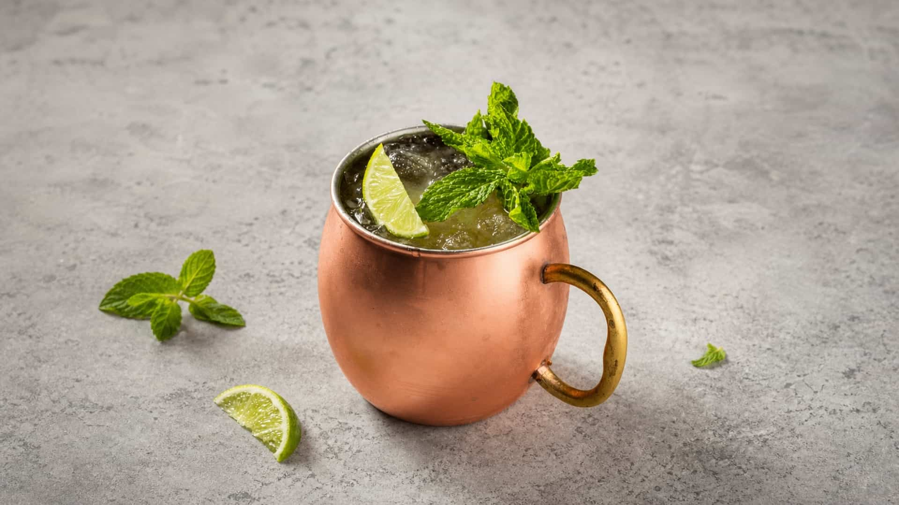

Virgin Jamaican Mule


Le Virgin Jamaican Mule est une boisson rafraîchissante et sans alcool, parfaite pour les chaudes journées d'été. Il combine le piquant du gingembre avec la fraîcheur du citron vert, offrant une expérience gustative unique.
Ingrédients :
Préparation
- Remplissez une timbale en cuivre (ou un verre Old Fashioned) de glaçons.
- Versez le rhum sans alcool et le jus de citron vert directement dans le verre.
- Allongez le tout avec la Ginger Beer bien fraîche.
- Remuez délicatement avec une cuillère à mélange pour lier les saveurs sans perdre les bulles.
- Décorez avec une rondelle de citron vert et une tête de menthe.